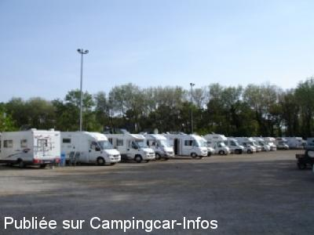

ASN = Aire de services avec stationnement nuit possible de :
LE TOUQUET PARIS PLAGE
(N° 422)
Accès/adresse :
Boulevard de la Canche
62520 LE TOUQUET PARIS PLAGE
62520 LE TOUQUET PARIS PLAGE
Latitude : (Nord) 50.52602° Décimaux ou 50° 31′ 33′′
Longitude : (Est) 1.5982° Décimaux ou 1° 35′ 53′′
Tarif : 2014
Stationnement : 9 €
Services, électricité : 2 €
Paiement par carte bancaire sur horodateur
Type de borne : AIRESERVICES
Services :


Autres informations :
Prés de l'hippodrome
Le 25/04/2009 par C.ROMA

Le 06/05/2008 par philippe.dubois160
Le 22/04/2007 par giloulin
Le 18/07/2006 par branger
de
popey76
le 06/02/2016 :
de passage le weekend de l'enduropale fin janvier,
cette aire fait plus pitié qu'envie !,
le stationnement est de 10€/24H (forfait enduropale 30€),
attention au stationnement sur herbe par temps de pluie
de passage le weekend de l'enduropale fin janvier,
cette aire fait plus pitié qu'envie !,
le stationnement est de 10€/24H (forfait enduropale 30€),
attention au stationnement sur herbe par temps de pluie
de
Dandunord
le 06/06/2015 :
Nous y avons passé la nuit du 24 au 25 mai 2015 qui fut très calme malgré le grand nombre de camping-cars qui y stationnaient.
Attention l'aire est parfois partiellement ou totalement fermée lorsqu'il y a des manifestations équestres.
Elle n'est pas tout près du centre-ville ni de la plage, mais des navettes gratuites vous y emmènent. L'arrêt le plus proche est "Cimetière-Parc Equestre", situé juste à coté de l'aire.
Nous y avons passé la nuit du 24 au 25 mai 2015 qui fut très calme malgré le grand nombre de camping-cars qui y stationnaient.
Attention l'aire est parfois partiellement ou totalement fermée lorsqu'il y a des manifestations équestres.
Elle n'est pas tout près du centre-ville ni de la plage, mais des navettes gratuites vous y emmènent. L'arrêt le plus proche est "Cimetière-Parc Equestre", situé juste à coté de l'aire.
de
Claude
le 04/08/2014 :
Nous sommes passé sur cette aire le 27/07/2014.Grands espaces ombragés, calme, 9€ par 24h, borne de service payante. Attention aux contrôles de stationnement.
C'est très correct.
Nous sommes passé sur cette aire le 27/07/2014.Grands espaces ombragés, calme, 9€ par 24h, borne de service payante. Attention aux contrôles de stationnement.
C'est très correct.
de
le 18/02/2013 :
§ Pour info, le stationnement est passé à 9€.
§ Pour info, le stationnement est passé à 9€.
de
Boris LEBACQ
le 26/03/2012 :
§Bonjour,
Je suis passé sur cette aire lors de l'enuropale février 2012, plus de travaux, l'aire reste égale à elle même et a le mérite dêtre toujours en fonction, si on aime visiter le Touquet A noter qu'elle est légèrement moins cher que celle de la canche 7,50 €, pourquoi?
§Bonjour,
Je suis passé sur cette aire lors de l'enuropale février 2012, plus de travaux, l'aire reste égale à elle même et a le mérite dêtre toujours en fonction, si on aime visiter le Touquet A noter qu'elle est légèrement moins cher que celle de la canche 7,50 €, pourquoi?
de
Boris
le 09/07/2011 :
Bonjour,
J'y suis passée il y a deux semaines, l'aire semble être en gros travaux (centre équestre) les quelques rares CC présents du samedi ont du libérer l'espace, j'ai l'impression (à confirmer) que cette aire vit ses derniers moments.
Je me suis plaçé sur l'aire de la canche, il y avait de la place peut être du fait du tarif (9,20€) qui il est vrai ne cesse d'augmenter
Cordialement
Bonjour,
J'y suis passée il y a deux semaines, l'aire semble être en gros travaux (centre équestre) les quelques rares CC présents du samedi ont du libérer l'espace, j'ai l'impression (à confirmer) que cette aire vit ses derniers moments.
Je me suis plaçé sur l'aire de la canche, il y avait de la place peut être du fait du tarif (9,20€) qui il est vrai ne cesse d'augmenter
Cordialement
de
Steve Tomlinson
le 24/04/2011 :
Very busy facility. There is now a bourne for water etc and the charge is 2 Euros. The charge for staying is 7.50 Euros. Quiet despite the numbers and a good stop off before or after the ferry to the UK. Fuel, supermarkets and all other shops are available close by.
Thanks to the community and Marie for the facility
Very busy facility. There is now a bourne for water etc and the charge is 2 Euros. The charge for staying is 7.50 Euros. Quiet despite the numbers and a good stop off before or after the ferry to the UK. Fuel, supermarkets and all other shops are available close by.
Thanks to the community and Marie for the facility